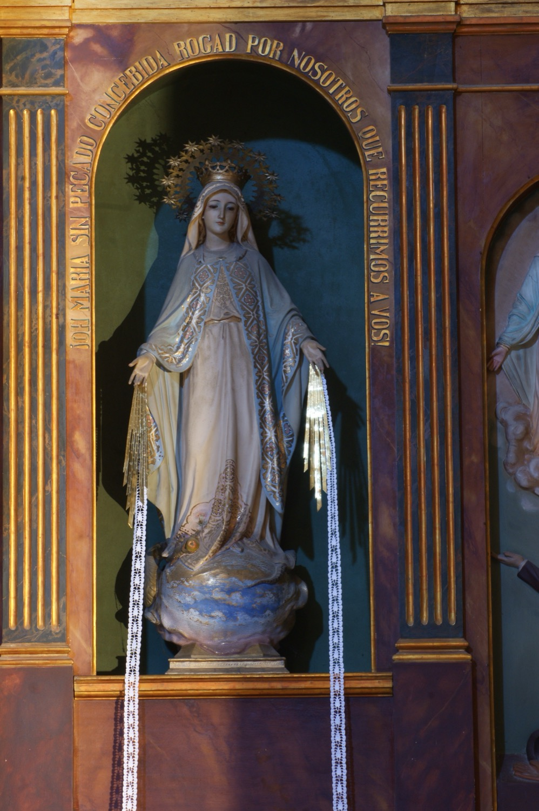

La Mare de Déu de la Medalla Miraculosa és una advocació mariana basada en una visió de la Verge Maria que tingué santa Catalina Labouré a París l’any 1830. La Verge se li aparegué dins d’un oval, dreta sobre un globus terraqüi, i amb anells a les mans dels quals sorgien raigs de llum en direcció al globus; segons la Verge, aquests raigs representaven les gràcies que vessa sobre les persones que les demanen. L’oval estava emmarcat amb les paraules “Oh, Maria, concebuda sense pecat, pregau per nosaltres que recorrem a vós”. Després l’oval girà i mostrà un cercle de 12 estrelles i, a l’interior, una lletra “M” a la base d’una creu i els Sagrats Cors de Jesús i Maria. La Mare de Déu li encarregà que es fessin medalles amb aquestes imatges. Catalina ho explicà al seu confessor i, després de dos anys observant la vida de la religiosa, aquest ho comunicà al bisbe, que n’aprovà l’emissió. És la coneguda com la “Medalla Miraculosa”, que assolí molt aviat una gran popularitat.
Aquesta escultura, obra, com la resta de l’altar, de l’escultor Guillem Mas (s. XX), mostra la imatge habitual de la Verge a l’anvers de la Medalla Miraculosa: dreta sobre el món envoltat de niguls, amb els braços oberts, dels quals es desprenen raigs de llum i cintes, i amb la invocació mariana que envoltava l’oval gravada en el marc del nínxol.